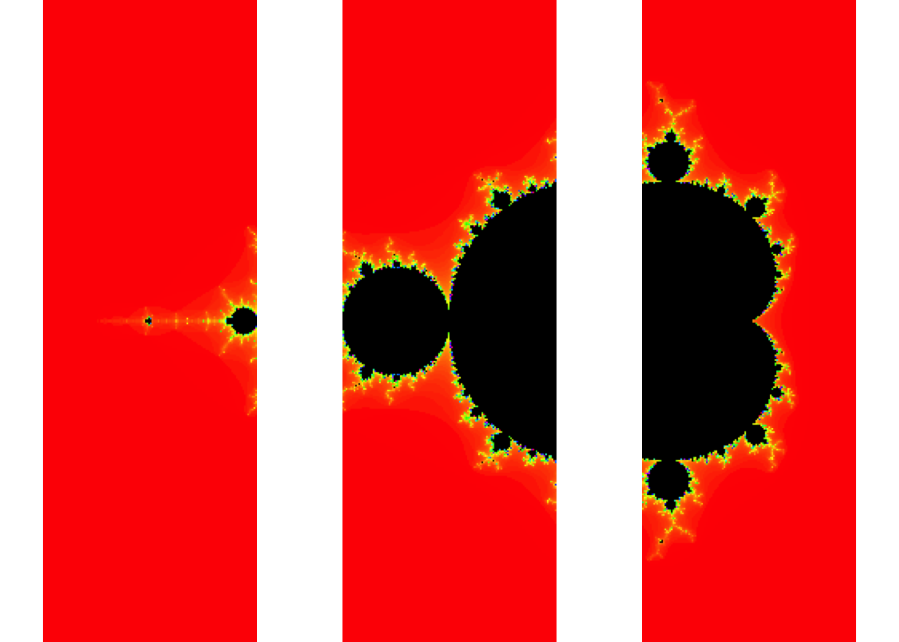

# vignette("future-1-overview")
library(future)To run jobs on a cluster, you need to use a job scheduler. For this, you need a second package future.batchtools. Further, you need to copy a template file for job scripts to the server.
library("future")
library("listenv")
library("future.batchtools")
library(debugme)
Sys.setenv(DEBUGME='batchtools')
library(batchtools)
## Set up access to remote login node
# login_vpn <- tweak(remote, workers = "rarslan@login.gwdg.de") # doesn't work because R not installed
login <- tweak(remote, workers = "gwdu102.gwdg.de", user = 'rarslan')
bsub <- tweak(batchtools_lsf, template = 'lsf.tmpl',
# workers = "export LSF_ENVDIR=/opt/lsf/conf",
resources = list(job.name = 'test1',
log.file = 'blaaa2.log',
queue = 'mpi',
walltime = '1:00',
processes = 4))
## Specify future topology
## login node -> { cluster nodes } -> { multiple cores }
plan(list(
login,
bsub,
multicore
))
demo("mandelbrot", package = "future", ask = FALSE)##
##
## demo(mandelbrot)
## ---- ~~~~~~~~~~
##
## > library("future")
##
## > library("graphics")
##
## > plot_what_is_done <- function(counts) {
## + for (kk in seq_along(counts)) {
## + f <- counts[[kk]]
## +
## + ## Already plotted?
## + if (!inherits(f, "Future")) next
## +
## + ## Not resolved?
## + if (!resolved(f)) next
## +
## + cat(sprintf("Plotting tile #%d of %d ...\n", kk, n))
## + counts[[kk]] <- value(counts[[kk]])
## + screen(kk)
## + plot(counts[[kk]])
## + }
## +
## + counts
## + }
##
## > ## Options
## > region <- getOption("future.demo.mandelbrot.region", 1L)
##
## > if (!is.list(region)) {
## + if (region == 1L) {
## + region <- list(xmid = -0.75, ymid = 0.0, side = 3.0)
## + } else if (region == 2L) {
## + region <- list(xmid = 0.283, ymid = -0.0095, side = 0.00026)
## + } else if (region == 3L) {
## + region <- list(xmid = 0.282989, ymid = -0.01, side = 3e-8)
## + }
## + }
##
## > nrow <- getOption("future.demo.mandelbrot.nrow", 3L)
##
## > resolution <- getOption("future.demo.mandelbrot.resolution", 400L)
##
## > delay <- getOption("future.demo.mandelbrot.delay", interactive())
##
## > if (isTRUE(delay)) {
## + delay <- function(counts) Sys.sleep(rexp(1, rate = 2))
## + } else if (!is.function(delay)) {
## + delay <- function(counts) {}
## + }
##
## > ## Generate Mandelbrot tiles to be computed
## > Cs <- mandelbrot_tiles(xmid = region$xmid, ymid = region$ymid,
## + side = region$side, nrow = nrow,
## + resolution = resolution)
##
## > if (interactive()) {
## + if (.Platform$GUI == "RStudio") {
## + if (!"RStudioGD" %in% names(dev.list())) dev.new()
## + }
## + dev.new()
## + plot.new()
## + split.screen(dim(Cs))
## + for (ii in seq_along(Cs)) {
## + screen(ii)
## + par(mar = c(0, 0, 0, 0))
## + text(x = 1 / 2, y = 1 / 2, sprintf("Future #%d\nunresolved", ii), cex = 2)
## + }
## + } else {
## + split.screen(dim(Cs))
## + }## [1] 1 2 3 4 5 6 7 8 9
##
## > counts <- list()
##
## > n <- length(Cs)
##
## > for (ii in seq_len(n)) {
## + cat(sprintf("Mandelbrot tile #%d of %d ...\n", ii, n))
## + C <- Cs[[ii]]
## +
## + counts[[ii]] <- future({
## + cat(sprintf("Calculating tile #%d of %d ...\n", ii, n))
## + fit <- mandelbrot(C)
## +
## + ## Emulate slowness
## + delay(fit)
## +
## + cat(sprintf("Calculating tile #%d of %d ... done\n", ii, n))
## + fit
## + })
## +
## + ## Plot tiles that are already resolved
## + counts <- plot_what_is_done(counts)
## + }
## Mandelbrot tile #1 of 9 ...
## Mandelbrot tile #2 of 9 ...
## Plotting tile #1 of 9 ...## Mandelbrot tile #3 of 9 ...
## Plotting tile #2 of 9 ...## Mandelbrot tile #4 of 9 ...
## Plotting tile #3 of 9 ...## Mandelbrot tile #5 of 9 ...
## Plotting tile #4 of 9 ...## Mandelbrot tile #6 of 9 ...
## Plotting tile #5 of 9 ...## Mandelbrot tile #7 of 9 ...
## Plotting tile #6 of 9 ...## Mandelbrot tile #8 of 9 ...
## Plotting tile #7 of 9 ...## Mandelbrot tile #9 of 9 ...
## Plotting tile #8 of 9 ...##
## > ## Plot remaining tiles
## > repeat {
## + counts <- plot_what_is_done(counts)
## + if (!any(sapply(counts, FUN = inherits, "Future"))) break
## + }
## Plotting tile #9 of 9 ...##
## > close.screen()
## [1] 1 2 3 4 5 6 7 8 9
##
## > message("SUGGESTION: Try to rerun this demo after changing strategy for how futures are resolved, e.g. plan(multiprocess).\n")## SUGGESTION: Try to rerun this demo after changing strategy for how futures are resolved, e.g. plan(multiprocess).
x %<-% {
thost <- Sys.info()[["nodename"]]
tpid <- Sys.getpid()
# set_gwdg_env()
y <- listenv()
for (task in 1:4) {
## (b) This will be evaluated on a compute node on the cluster
y[[task]] %<-% {
mhost <- Sys.info()[["nodename"]]
mpid <- Sys.getpid()
z <- listenv()
for (jj in 1:2) {
## (c) These will be evaluated in separate processes on the same compute node
z[[jj]] %<-% data.frame(task = task,
top.host = thost, top.pid = tpid,
mid.host = mhost, mid.pid = mpid,
host = Sys.info()[["nodename"]],
pid = Sys.getpid())
}
Reduce(rbind, z)
}
}
Reduce(rbind, y)
}
print(x)## task top.host top.pid mid.host mid.pid host pid
## 1 1 gwdu102 18801 dfa003 16768 dfa003 16811
## 2 1 gwdu102 18801 dfa003 16768 dfa003 16815
## 3 2 gwdu102 18801 dfa003 16767 dfa003 16812
## 4 2 gwdu102 18801 dfa003 16767 dfa003 16814
## 5 3 gwdu102 18801 dfa003 16766 dfa003 16813
## 6 3 gwdu102 18801 dfa003 16766 dfa003 16816
## 7 4 gwdu102 18801 dfa001 17770 dfa001 17793
## 8 4 gwdu102 18801 dfa001 17770 dfa001 17794brms is a Bayesian regression modelling software. Because we often run multiple chains in brms to assess convergence and obtain samples, more quickly, parallelisation is beneficial. brms has internal support for futures. By setting its future argument to true, it will run the chains according to plan. Because running such a model can take a lot of time, it is beneficial to offload it to a remote server or cluster.
login <- tweak(remote, workers = "gwdu102.gwdg.de", user = 'rarslan')
bsub <- tweak(batchtools_lsf, template = 'lsf.tmpl',
# workers = "export LSF_ENVDIR=/opt/lsf/conf",
resources = list(job.name = 'brms_test',
log.file = 'brms_test.log',
queue = 'mpi',
walltime = '2:00',
processes = 4))
library(brms)
## Specify future topology
## login node -> { cluster node (compile brms model) } -> { run chains on multiple cores }
plan(list(
login,
bsub,
multicore
))
fit2 %<-% { # login to gwdg
x %<-% { # bsub
library("brms")
brm(count ~ log_Age_c + log_Base4_c * Trt + (1|patient) + (1|obs),
data = epilepsy, family = poisson(),
chains = 4,
prior = c(prior(student_t(5,0,10), class = b),
prior(cauchy(0,2), class = sd)),
future = TRUE #multicore
)
} %globals% FALSE
x
}
fit2## Family: poisson(log)
## Formula: count ~ log_Age_c + log_Base4_c * Trt + (1 | patient) + (1 | obs)
## Data: epilepsy (Number of observations: 236)
## Samples: 4 chains, each with iter = 2000; warmup = 1000; thin = 1;
## total post-warmup samples = 4000
## ICs: LOO = NA; WAIC = NA; R2 = NA
##
## Group-Level Effects:
## ~obs (Number of levels: 236)
## Estimate Est.Error l-95% CI u-95% CI Eff.Sample Rhat
## sd(Intercept) 0.37 0.04 0.29 0.46 1648 1.00
##
## ~patient (Number of levels: 59)
## Estimate Est.Error l-95% CI u-95% CI Eff.Sample Rhat
## sd(Intercept) 0.51 0.07 0.38 0.66 1681 1.00
##
## Population-Level Effects:
## Estimate Est.Error l-95% CI u-95% CI Eff.Sample Rhat
## Intercept 1.74 0.11 1.52 1.95 2735 1.00
## log_Age_c 0.48 0.37 -0.23 1.21 2929 1.00
## log_Base4_c 0.88 0.14 0.61 1.16 2659 1.00
## Trt1 -0.33 0.16 -0.64 -0.02 2964 1.00
## log_Base4_c:Trt1 0.35 0.21 -0.07 0.77 2426 1.00
##
## Samples were drawn using sampling(NUTS). For each parameter, Eff.Sample
## is a crude measure of effective sample size, and Rhat is the potential
## scale reduction factor on split chains (at convergence, Rhat = 1).Also showing a different way to set up the future and pass along globals and packages.
## Specify future topology
## login node -> { cluster nodes } -> { multiple cores }
plan(list(
login,
bsub,
multicore
))
mydata = data.frame(x = rnorm(100), y = rnorm(100))
fit2 = future({
# login to gwdg
# then send off bsub and wait for result
value(future({ # bsub
brm(x ~ y,
data = mydata,
chains = 4,
future = TRUE #multicore
)
}, globals = c("mydata"), packages = 'brms'
))
})
resolved(fit2)## [1] FALSE# while (!resolved(fit2)) {
# Sys.sleep(1)
# }
summary(value(fit2))## Family: gaussian(identity)
## Formula: x ~ y
## Data: mydata (Number of observations: 100)
## Samples: 4 chains, each with iter = 2000; warmup = 1000; thin = 1;
## total post-warmup samples = 4000
## ICs: LOO = NA; WAIC = NA; R2 = NA
##
## Population-Level Effects:
## Estimate Est.Error l-95% CI u-95% CI Eff.Sample Rhat
## Intercept -0.07 0.11 -0.28 0.14 4000 1.00
## y 0.03 0.11 -0.19 0.23 3528 1.00
##
## Family Specific Parameters:
## Estimate Est.Error l-95% CI u-95% CI Eff.Sample Rhat
## sigma 1.05 0.08 0.91 1.21 3395 1.00
##
## Samples were drawn using sampling(NUTS). For each parameter, Eff.Sample
## is a crude measure of effective sample size, and Rhat is the potential
## scale reduction factor on split chains (at convergence, Rhat = 1).